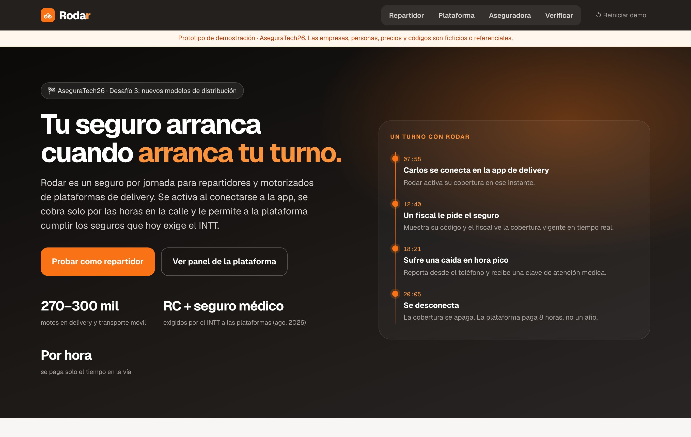
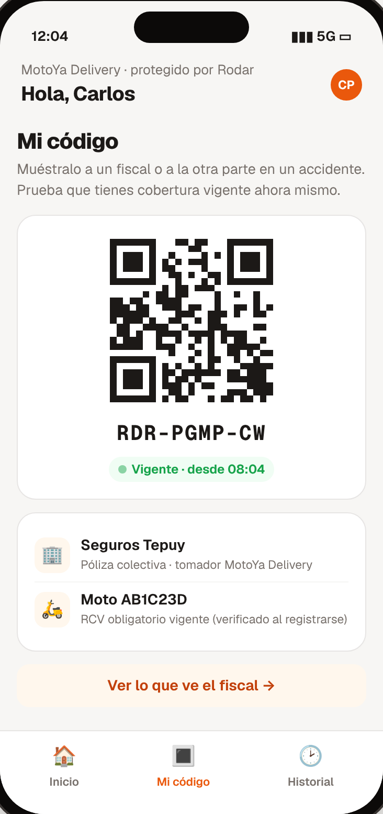
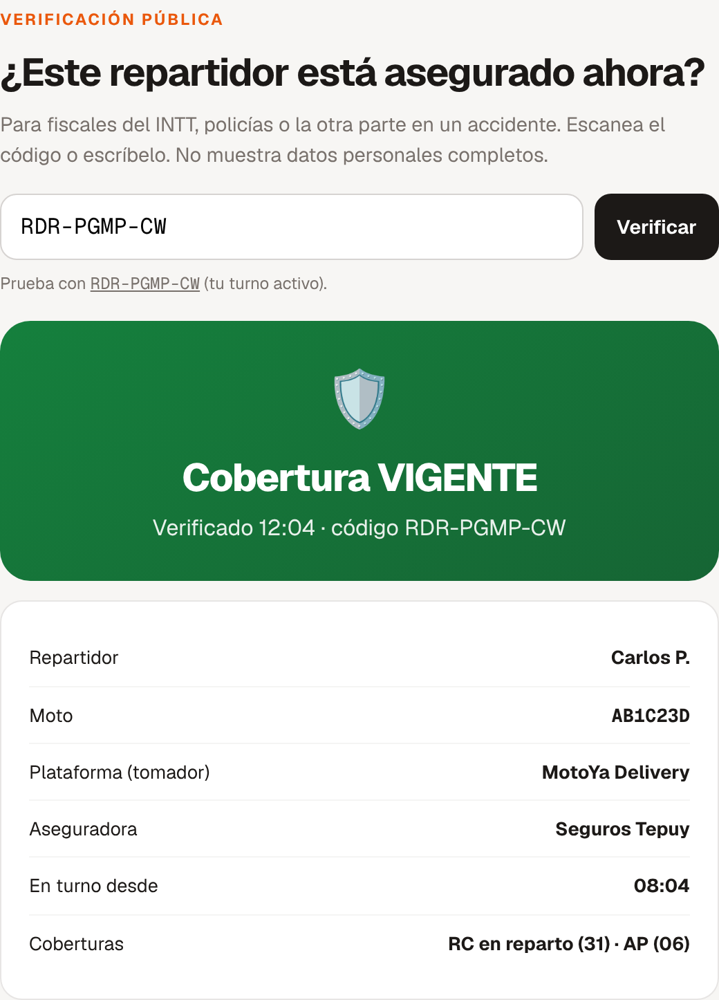
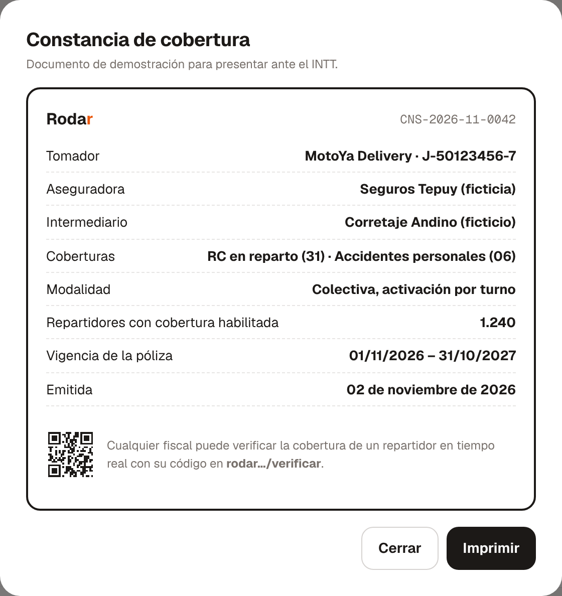
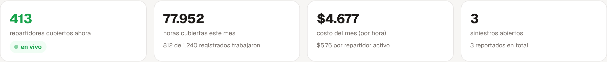
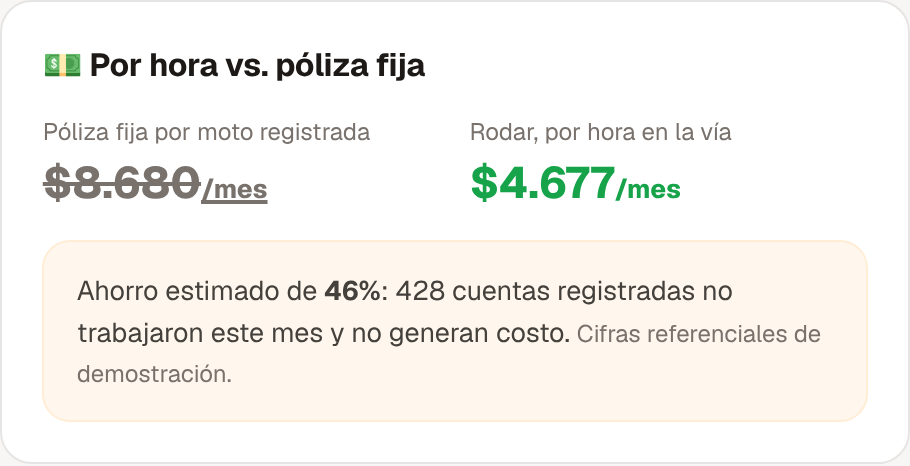
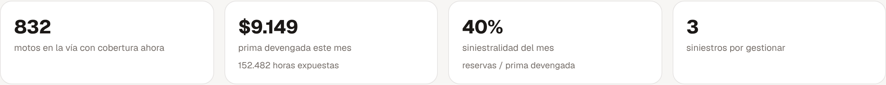
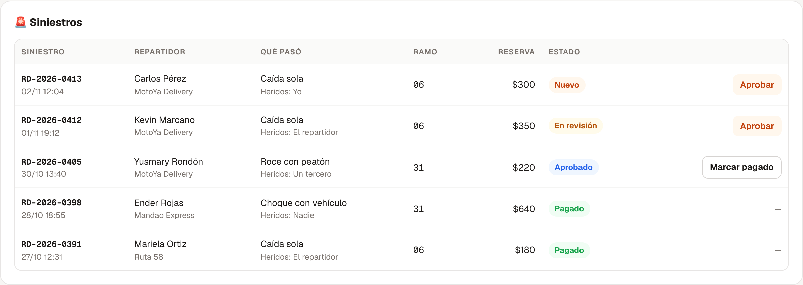
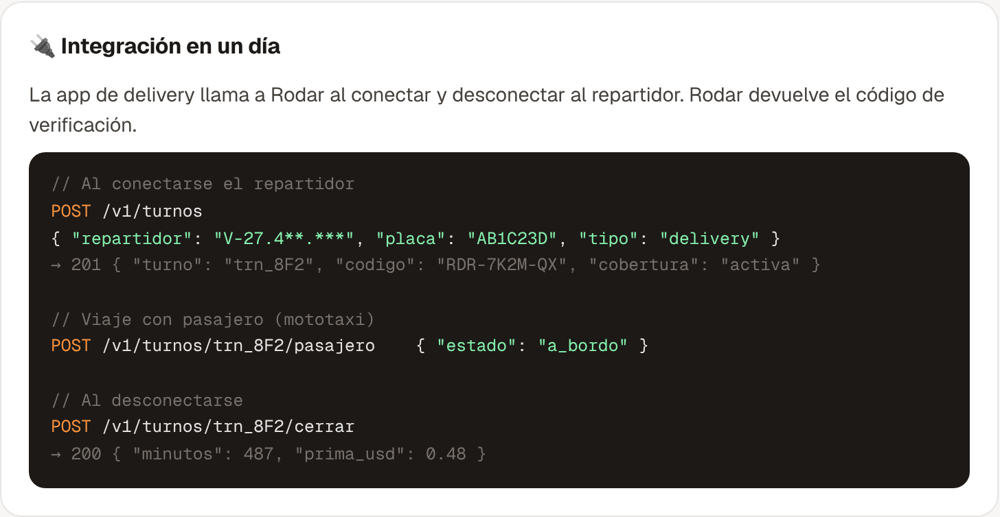

Un seguro por jornada para repartidores y motorizados de plataformas de delivery: se activa al conectarse a la app, se paga solo por las horas en la vía y le permite a la plataforma cumplir los seguros que exige el INTT.

Desafío 3: Nuevos modelos de distribución y seguros Desafío 2: Seguros inclusivos, microseguros y masivos Etapa: pre-semilla, con prototipo funcional en línea Prototipo: rodarsegurosve.vercel.app
Noviembre de 2026
Resumen ejecutivo
El seguro que sigue a la jornada
Desde agosto de 2026 el INTT exige a las plataformas de delivery y de viajes mantener vigentes un seguro de responsabilidad civil y un seguro médico. Pero los repartidores trabajan por horas, rotan entre apps y muchos se registran sin salir a la calle. Rodar es un seguro colectivo que se activa cuando el repartidor se conecta y se apaga cuando se desconecta: la plataforma paga solo las horas reales, el repartidor trabaja protegido sin trámites y la aseguradora gana un canal masivo con datos de riesgo por hora.
📦
Para la plataforma
Cumple la norma pagando por uso, con constancia para el INTT y control de requisitos de su flota.
🛵
Para el repartidor
Protección en cada turno, sin costo para él, con reporte de accidentes y clave médica desde el teléfono.
🏢
Para la aseguradora
Un canal masivo nuevo, prima ligada a la exposición real y datos por hora y zona para tarificar.
El problema
La norma ya llegó. El seguro a la medida del repartidor, todavía no.
RC + seguro médico
El INTT exige a las empresas de delivery y viajes mantener vigentes ambas pólizas, además de Registro Nacional, escuela de conductores y revisiones técnicas.
INTT, agosto de 2026 · El Universal
La plataforma responde
El INTT considera prestadora del servicio a la empresa dueña de la app, aunque el repartidor use moto propia o alquilada.
INTT, agosto de 2026 · NotiFalcón
270–300 mil
motos en delivery y transporte móvil, de unos 1,5 millones registradas. Cavecom-e advirtió que los seguros obligatorios subirán la tarifa del delivery.
Cavecom-e · Finanzas Digital, 2026
El más vulnerable
Los motorizados encabezan las víctimas de accidentes de tránsito y los siniestros se concentran en horas pico, las mismas del delivery.
Observatorio de Seguridad Vial · El Diario
El desajuste: una póliza anual fija por moto cobra las 24 horas de los 365 días, incluso por cuentas registradas que casi no trabajan. Y el 22 de octubre de 2026 el INTT abrió una consulta nacional a motorizados para ajustar la regulación: el producto todavía se puede diseñar a la medida.
Rodar · AseguraTech262
La solución
Cobertura que se enciende y se apaga con el turno
Rodar se integra a la app de delivery por API. Cuando el repartidor se conecta, la cobertura se activa; cuando se desconecta, se apaga. La plataforma, como tomador de una póliza colectiva, paga por hora con un tope diario.
Cómo funciona
1
La plataforma se integra: su app avisa a Rodar al iniciar y cerrar cada turno, y cuando sube un pasajero en un viaje en moto.
2
La cobertura se activa sola: el repartidor no hace trámites. Rodar verifica al registrarlo que su moto tenga el RCV obligatorio vigente.
3
Se paga por uso: la prima corre por minuto y se factura mensual a la plataforma. Las cuentas que no trabajan no generan costo.
4
Todo es verificable: código de cobertura para fiscales, reporte de siniestros desde el teléfono y constancia de cumplimiento para el INTT.
Coberturas por turno
Cobertura
Qué cubre
Ramo
Cuándo
Responsabilidad civil en reparto
Daños a terceros durante la actividad, como exceso sobre el RCV obligatorio de la moto
31
Todo el turno
Accidentes personales del repartidor
Gastos médicos, invalidez y muerte, con clave de atención en la red
06
Todo el turno
Accidentes personales del pasajero
Gastos médicos del pasajero en viajes en moto
06
Solo con pasajero a bordo
Los actores
Actor
Qué hace en Rodar
Plataforma (tomador)
Integra la API, ve su flota cubierta en tiempo real, paga por hora y descarga la constancia para el INTT.
Repartidor (asegurado)
Trabaja cubierto, muestra su código de verificación y reporta accidentes en 3 pasos.
Aseguradora
Asume el riesgo; ve exposición por hora, prima devengada y siniestralidad, y gestiona los siniestros.
Intermediario autorizado
Coloca la póliza colectiva con cada plataforma.
Rodar · AseguraTech263
Recorrido · Repartidor
Un turno protegido, de principio a fin
Así se ve Rodar dentro de la app de delivery. El repartidor no compra nada ni llena formularios: su cobertura sigue a su jornada.
Cobertura activa. Hora de inicio, tiempo en turno y costo acumulado, que paga la plataforma. Con pasajero a bordo se activa su cobertura médica.

Mi código. Prueba que tiene cobertura vigente en ese momento, ante un fiscal o la otra parte en un accidente.
Reporte en 3 pasos. Qué pasó, quién resultó herido y fotos. Si hay heridos, recibe una clave de atención médica válida 24 horas.
Menos fraude por diseño. El turno lo abre la app de la plataforma, no el repartidor, y cada reporte se cruza con la hora y la ubicación registradas del turno.
Rodar · AseguraTech264
Recorrido · Verificación y cumplimiento
Cobertura comprobable en la calle y ante el INTT
Hoy, demostrar que un repartidor está asegurado depende de papeles. Con Rodar, cualquier fiscal, policía o la otra parte de un accidente verifica la cobertura en tiempo real, y la plataforma tiene su constancia lista para el INTT.

Verificación pública: muestra solo iniciales, placa, plataforma, aseguradora y desde qué hora está en turno.

Constancia para el INTT: tomador, aseguradora, intermediario, ramos, modalidad y vigencia.
Si el turno terminó, el mismo código muestra "Sin cobertura activa" y la hora en que se apagó. La verificación nunca expone la cédula ni el teléfono.
Rodar · AseguraTech265
Recorrido · Plataforma de delivery
La flota cubierta, en vivo
El panel de la plataforma muestra cuántos repartidores están cubiertos en este momento, cuánto cuesta el mes y qué falta para cumplir con el INTT.

Indicadores: repartidores cubiertos ahora, horas del mes, costo y siniestros abiertos.
Cumplimiento INTT: pólizas vigentes, certificados de aptitud y RCV de cada moto.

Por hora vs. póliza fija (cifras referenciales de la demo).
En la demo, una flota de 1.240 registrados con 812 activos en el mes paga $4.677 por hora en la vía, frente a $8.680 de una póliza fija por moto registrada: 46 % menos. El ahorro viene de no pagar por las cuentas que no salieron a la calle.
Rodar · AseguraTech266
Recorrido · Aseguradora
Riesgo medido por hora, no por año
La aseguradora ve cuántas motos expone en cada momento, la prima devengada y dónde se concentran los siniestros. El reporte del repartidor le llega al instante.

Indicadores: motos en la vía, prima devengada, siniestralidad y siniestros por gestionar.Exposición por hora y mapa de siniestros por día y franja: picos en almuerzo y en la tarde, como el delivery.

Siniestros: con ramo, reserva y estado; la aseguradora aprueba y marca pagado.
Rodar · AseguraTech267
Viabilidad
Construido sobre la regulación venezolana
Intermediación responsable
Rodar no asume riesgo ni intermedia. El riesgo es de una aseguradora autorizada por la SUDEASEG y la colocación la hace un intermediario autorizado. Rodar es la capa tecnológica.
Ramos contables: responsabilidad civil de vehículos (31) y accidentes personales (06), con su código en cada cobertura.
RCV obligatorio intacto: sigue siendo del propietario de la moto según la Ley de Transporte Terrestre. Rodar lo verifica y cubre la actividad de reparto por encima de ese límite.
Producto: requiere un condicionado de póliza colectiva con activación por turno aprobado por la SUDEASEG. Es el primer paso del piloto.
Datos personales: la verificación pública muestra solo iniciales, placa y estado de la cobertura.
Aplicabilidad en Venezuela
Responde a una obligación vigente del INTT para plataformas de delivery y viajes, y puede alimentar la consulta nacional abierta en octubre de 2026.
Se distribuye por un canal que ya existe: las apps de delivery, sin red de ventas.
Sirve a plataformas grandes y pequeñas: la integración es una API de tres llamadas.

Integración: abrir turno, marcar pasajero a bordo y cerrar turno.
Rodar · AseguraTech268
Modelo de negocio
Cómo crece Rodar
Fuente de ingresos
Descripción
Comisión tecnológica
Un porcentaje de la prima por hora, acordado con la aseguradora por operar el canal.
Suscripción de la plataforma
Panel de flota, constancias, control de requisitos y API.
Datos de riesgo agregados
Reportes de siniestralidad por hora y zona para la aseguradora, sin datos personales.
Por qué ahora
La obligación del INTT es de agosto de 2026 y no existe un producto pensado para el trabajo por turnos.
El delivery ya funciona por apps, que son el canal natural de distribución.
Cada turno deja horas, zona y franja: la base para tarificar por riesgo real.
Hoja de ruta
Fase
Qué
Hoy
Prototipo en línea: app del repartidor, panel de la plataforma, panel de la aseguradora y verificación pública.
0–3 meses
Validación con 2–3 plataformas y 1 aseguradora; diseño del condicionado por turno.
3–6 meses
Piloto con una plataforma: API en producción, facturación mensual por horas y constancias.
6–12 meses
Tarifa por zona y franja; más plataformas (mototaxi, encomiendas, mensajería).
12+ meses
El mismo modelo para otros trabajos por plataforma: conductores de carro y técnicos a domicilio.
Métricas del piloto
% de la flota activa con cobertura en cada turno, y horas cubiertas por mes
Costo por repartidor activo frente a la póliza fija
Tiempo de reporte y de primer contacto en un siniestro
Siniestralidad por hora expuesta y verificaciones hechas en la calle
Rodar · AseguraTech269
Estado actual
Un prototipo que ya se puede probar
El prototipo está en línea en rodarsegurosve.vercel.app. Lo que se hace como repartidor aparece al instante en los paneles de la plataforma y de la aseguradora.
Qué está construido
Vista
Funcionalidades
Repartidor
Iniciar y terminar turno, costo por minuto con tope diario, pasajero a bordo, código de verificación, reporte de accidente en 3 pasos con clave de atención médica, historial semanal.
Plataforma
Repartidores cubiertos en vivo, filtros de flota y alertas de requisitos, cumplimiento INTT, constancia imprimible, comparación con póliza fija, siniestros e integración por API.
Aseguradora
Exposición por hora, prima devengada, siniestralidad, mapa de siniestros por día y franja, aprobación y pago de siniestros, plataformas aseguradas.
Verificación
Consulta pública por código: cobertura vigente, terminada o código inexistente.
Empresas, personas, precios y códigos del prototipo son ficticios o referenciales. Las cifras de ahorro sirven para ilustrar el modelo y deben validarse con datos reales de una plataforma.
Fuentes
INTT, requisitos para empresas de delivery (agosto de 2026): El Universal; NotiFalcón; Efecto Cocuyo.
INTT, consulta nacional a motorizados (22 de octubre de 2026): El Impulso; Analítica.
Cavecom-e, costos de los seguros obligatorios y motos en delivery: Finanzas Digital (2026).
Motorizados en accidentes de tránsito: El Diario; Observatorio de Seguridad Vial.
RCV obligatorio, Gaceta Oficial Extraordinaria N° 6.835: El Diario (2025).